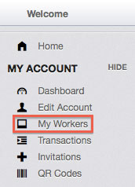
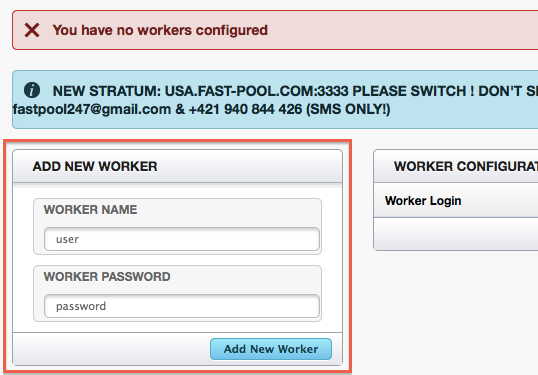
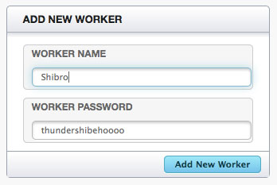
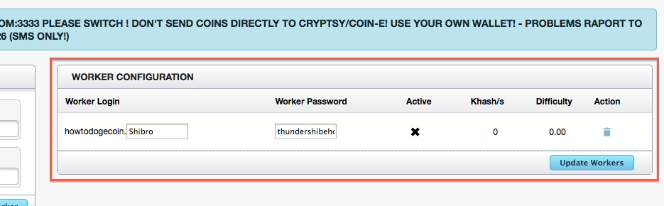
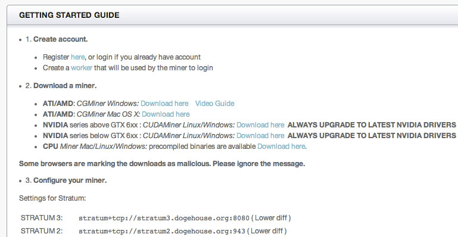
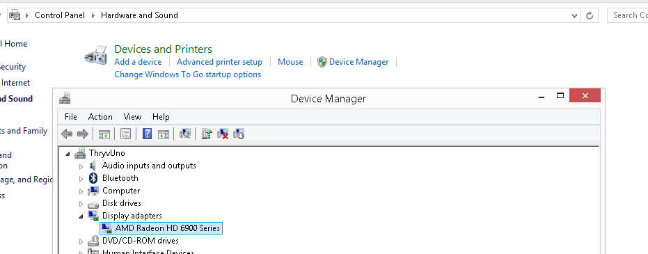
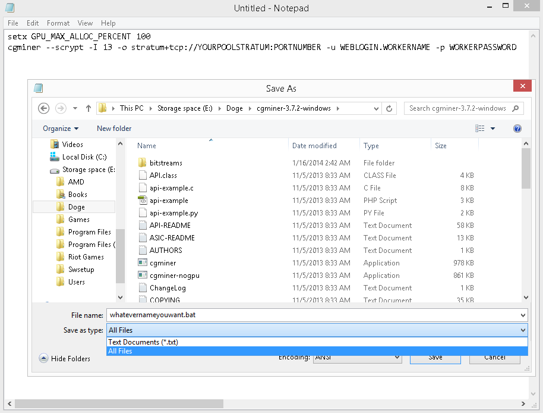
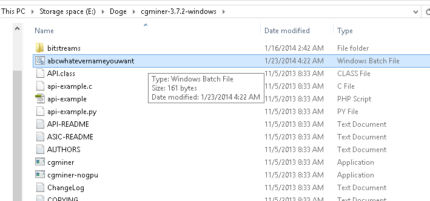
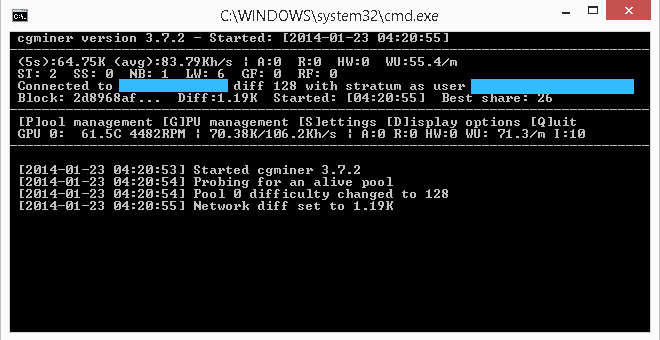
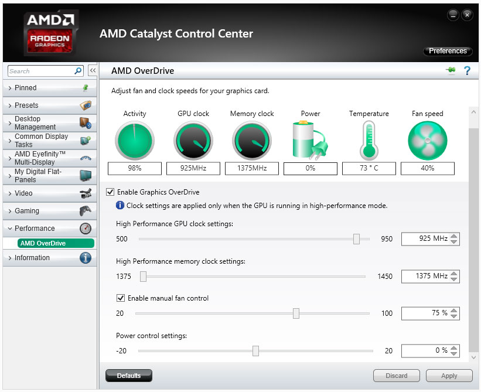

Mine some Dogecoins!
Last updated on Jan 27, 2014
To mine Doge (or other cryptocurrencies), your computer basically does hard math and is rewarded with coins. A more detailed explanation of what is going on can be found here. You will have upfront hardware costs and electricity costs but the mining process is free.
Hardware
We are just using gaming computers we already owned, but some people go out of their way to build mining rigs. In terms of hardware efficiency, AMD graphic cards are better than Nvidia graphic cards, and both are much better than CPU mining.
We do not recommend using laptops or all in ones, like iMacs, as they are very closed systems. It is harder for them to dissipate heat and they are more difficult to repair.
While we don’t have any experience building mining rigs, we found this guide with template builds. The general goal is to get multiple powerful AMD graphic cards with bare-bones everything else (to reduce electricity costs). Here is a comparison of specific card performance. Thanks to the mining craze, you will have to pay top dollar for the popular cards (if you can even find them in stock) but this site may help with your search.
Learn more: consumer computer parts and their importance to mining.
| Part | Role in general | Importance in mining |
|---|---|---|
| CPU (main processor) | Performs the main computations. The "brain". | Needed to get the OS and program running. Speed not important. Go for low electricity usage. |
| GPU (graphics) | Usually handles video related tasks. A second "brain". Comes in two forms: integrated and discreate. Integrated (ex: Intel HD) means it is built into the CPU. Discreate (ex: AMD Radeon or Nvidia GeForce) means it is separated from the CPU so it can be more powerful. | Discreate cards are more effective at doing the mining calculations. Integrated are not very effective. Go for performance. Most important component. |
| memory | Temporary data storage (data lost if power is cut). Communicates with the CPU / GPU faster than permanent storage can (system would be bottlenecked in speed if it tried to only communicate with permanent storage). | Required just for the system to function. Go for minimum viable specs for low electricity usage. |
| motherboard | Connects everything together and sometimes has ethernet or wifi built in. | More PCI express slots on it means you can attach more GPUs. |
| permanent storage | Used to save data even when power is turned off. Usually in the form of hard disk drives (hdd) or solid state drives (ssd). SSDs are faster and have no moving parts (better), but are more expensive. | Go for minimal power usage with enough storage for the OS and mining program. |
| power supply | Converts the power from the outlet into a more regulated form for the computer parts. Rated by their capacity and efficiency. Platinum > Gold > Silver > Bronze. | Very important. Ensure you pick one that is high quality to protect your expensive GPUs (unexpected surges can damage your hardware). Higher efficiency = less electricity wasted. You also have to buy one with a high enough capacity for your rig. |
| additional peripherals | Includes wi-fi cards, monitors, keyboards, mice, and other add ons. | Mostly not needed for mining beyond initial setup. Wi-fi / ethernet are sometimes built into the motherboard. Hardware enabling an internet connection IS required. |
You can also mine with virtual servers (such as Amazon EC2), which have no upfront hardware cost but bill by usage. However, they are more difficult to set up and we do not think these are cost effective anymore (better to just buy Doge outright). In fact, a shibe named Grant Ammons wrote up his experience losing money. Here is a guide we found if you want to go this route anyways.
Warning: before mining with your own hardware, you must understand that the computations will cause your hardware to work hard, greatly increasing their temperatures and speeding up wear and tear. It is important that the fan speed is also increased to maintain a target temperature range. Mining software like cgminer can control the fan in most cases, otherwise software like AMD's catalyst control center (CCC) can be used but it varies from card to card. Sometimes even CCC will not have the required functionality.
What is a good temperature? We like to keep our cards at ~70 degrees Celsius and below, although some people are comfortable with going to 80 degrees Celsius. The fans will be very loud, so balance annoyance with mining power. Higher temps = more risk of permanent damage. Cgminer has a temperature reading and other software, such as Catalyst control center or gpu-z, will as well.
Software (free)
The most popular software for mining is cgminer, cudaminer, and guiminer. Download links are below.
| Download | For | Notes |
|---|---|---|
|
CGminer
*windows zip *linux 64 bz2 *linux 64 lrz |
AMD, Nvidia, CPU | Best for AMD. Do NOT download the latest version of cgminer (3.10+). The latest versions removed support for graphic cards and are only for ASIC hardware. The latest version you can get for Dogecoin mining is 3.7.2. "cgminer-3.7.2-x86_64-built" is for Linux, not Windows. *prebuilt files were removed from the source, so I am hosting them* |
| CUDAminer | Nvidia | Best for mining with Nvidia graphic cards. |
| CPUminer | CPU | Best for mining with CPUs. However, CPU mining in general is not effective. |
| GUIminer | AMD, Nvidia, CPU | While the page says Litecoin, Litecoin and Dogecoin are both scrypt based so it works with Dogecoin. Easiest to setup, but may not be the most efficient. |
Note: for our guide, we mine in a pool using cgminer with an AMD card in Windows. We hope to eventually write guides for other miners / operating systems.
Solo mining vs. Pool mining
Mining rewards are random. You are basically searching for blocks, then solving and confirming the block for a reward. Currently the payout is up to 1,000,000 coins per block, but over time the reward max amount is halved. When? check here. The first to find and confirm the block gets the full payout of that block and everyone else has to move on. Stronger hardware = faster searching and confirming.
From an overall long term view, if you are 0.001% of the computing power overall you should be able to get ~0.001% of the payout overall (less likely to find and confirm blocks, but get 100% of the block payout when it happens). But this is a theoretical long term view, and smart shibes will team up with other shibes then split the rewards (more likely to find and confirm blocks, but split the block payout amongst the team). It is better to get consistent and frequent payouts so team up. To team up with other shibes you can, 1: join a pool or 2: join a p2pool.
We went with option 1 but have heard good things about option 2. However I have read if your hash rate is low, joining a p2pool is not worth it (not personally verified).
Joining a pool
To join a pool, select one from the following lists and sign up for an account. Larger pools are more consistent in payouts, but also consider fees or any other perks (such as bonuses for finding a block). All the pools we tried have the same general interface.
- Doktorrf pool directory (sortable)
- Doge pool directory
Warning: if you sign up for multiple pools we DO NOT use the same passwords. If a pool is hacked or has malicious intentions, the attackers will surely try the usernames and passwords on other pools.
Making workers
Once you joined a pool, login to their web page. You need to create a worker for each graphics card / cpu you have mining. Select "my workers" on the left, which is usually under "my account".
On your worker dashboard, there will be an option to create a new worker.
Give the worker a user name and password.
Once you've added your new worker, you should see it added to your list. Repeat for as many graphic cards / cpus you plan to have mining and note the usernames and passwords. You can always come back to this page if you forget.
Now go to "Getting Started", which is usually under "Home" or "Help". All the pools we've joined will have at least one stratum with a corresponding port number. Note these.
Setting up cgminer (AMD hardware on Windows)
As we mentioned, we will be going through this process with cgminer 3.7.2 on Windows with AMD cards as that is what we own.
First, ensure you have the latest drivers for your graphics card by downloading them here. If you need help determining what graphics card you have, go to your device manager (control panel > hardware and sound > device manager) and look under "display adapters".
After you have installed the latest drivers, grab the AMD SDK.
Once the SDK is installed, extract your downloaded cgminer file (link in the software section) to a location you can remember. Next, open up notepad and paste the following, replacing your-pools-stratum, port-number, web-login, worker-name, and worker-password with your information:
setx GPU_MAX_ALLOC_PERCENT 100
cgminer --scrypt -I 10 --temp-target 70 --gpu-fan 10-70 -o stratum+tcp://your-pools-stratum:port-number -u web-login.worker-name -p worker-password
It is basically saying use 100% of your gpu, scrypt mode (gpu mining), intensity of 10, target temperature of 70, gpu fan speed at 10-70%, then the stratum connection and worker information. Be sure to watch the temperature even with the fan settings, some cards do not respond to these commands.
-I (capital i) controls the intensity. The max is 20, but test the waters before tweaking this. The higher you go the less responsive your computer gets, so don't set it high if you plan to actually use your computer when mining.
Overclock.net forums describes other useful gpu settings, such as "--temp-cutoff 85" (max temperature until cgminer stops) and is worth a read.
Now go to save as, navigate to your cgminer folder, and select the all files dropdown (this lets you save it as a *.bat file instead of a *.txt). Then save it as "whatevernameyouwant.bat". This makes a Windows batch file which runs cgminer.exe with the provided commands. You can close notepad.
Now run the batch file you created and it should work if it is in the cgminer-3.7.2-windows folder (assuming the default folder name). It may complain about unsafeness or require permission to go through the firewall, but this is ok. Run it anyways and let it through!
This is an example of what you should see if it is successful. Note the GPU temp, hash rate (number next to Kh/s), and HW value. Temperature indicates how hot your card is getting, hash rate is its performance, and HW is hardware errors. We want HW to be 0, so reduce the intensity (ex: -I 9) if it gets too hot or has any HW errors.
For some reason, some people get a blank window with no output. If this occurs try closing the window, adding "-T" to your batch file (which tells it to go into text mode), and rerunning the batch file.
To quit, hit Q or Ctrl + C or click the X.
If the batch file fan control commands do not work, AMD's CCC may have an OverDrive option which lets you manually set fan speed. Below is what my CCC looks like.
What if my pool stratum fails?
Pools often provide multiple stratums and you can join multiple pools. You will want to configure the cgminer so that it switches if the current stratum fails with --failover-only followed by -o and the alternative stratum information. For example:
cgminer --scrypt -I 13 --no-submit-stale -o stratum+tcp://stratum.rapidhash.net:3333 -u Weblogin.Worker -p Worker-password --failover-only -o stratum+tcp://stratum2.rapidhash.net:3333 -u Weblogin.Worker -p Worker-password
Further tweaking, such as overclocking, is beyond the scope of this guide but /r/dogecoin has some guides on the sidebar. If you are curious, this is what I use with a Radeon HD 6970 to get ~500Kh/s at ~70 deg C:
cgminer -I 18 -w 256 --temp-cutoff 90 --temp-overheat 80 --temp-target 75 --gpu-fan 10-85 --no-submit-stale -o stratum+tcp://some-pool.com:1234 -u howtodogecoin.worker1 -p workwork1 --failover-only -o stratum+tcp://stratum.some-other-pool.net:4321 -u howtodogecoin.worker2 -p workwork2
Receiving your mined coins
Once you have mined some coins, login to your pool's web interface and go to "edit account", usually under "my account". Give it an address to send coins, then configure automatic payouts. You can also manually request payouts on the right.

More info
So you are happily mining Doge, now what? You can look at both your individual and pool's progress via the pool's web interface. We will add a summary of the dashboard information soon.